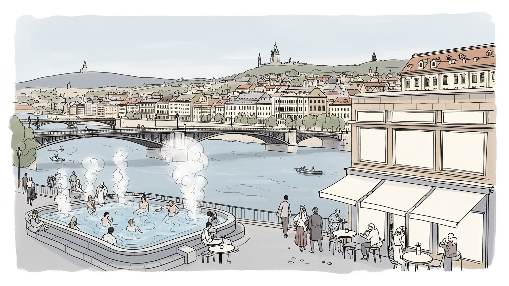
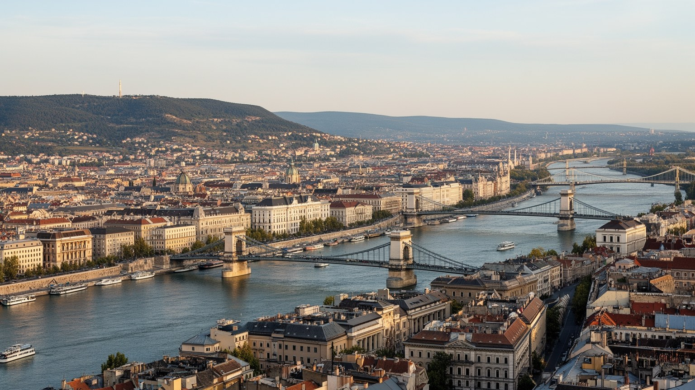
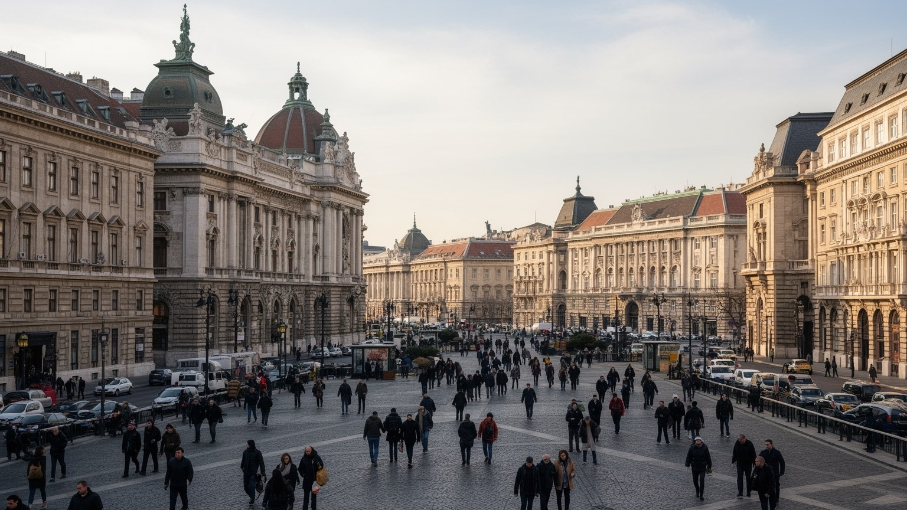
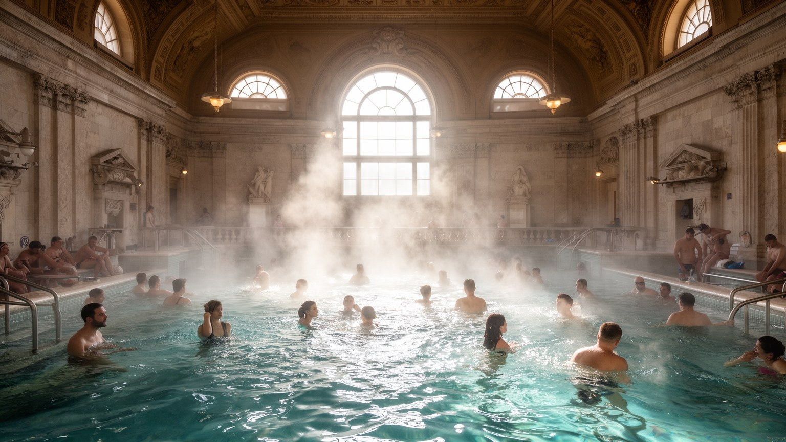
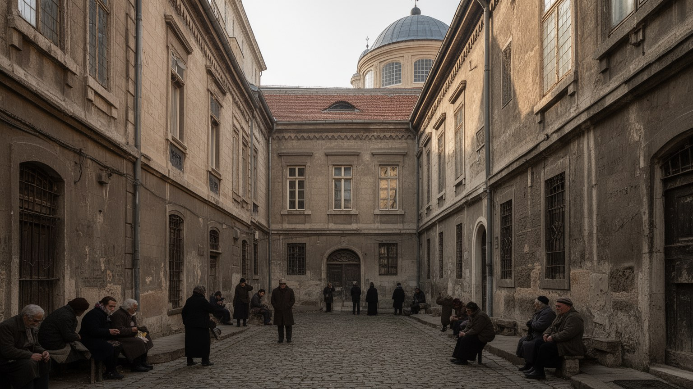
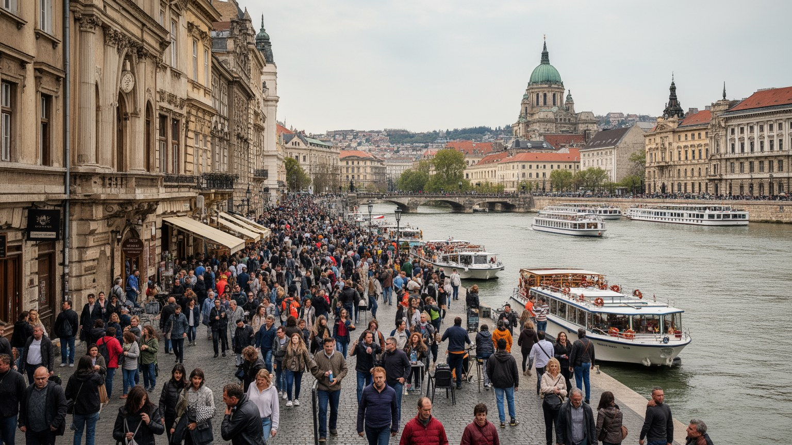
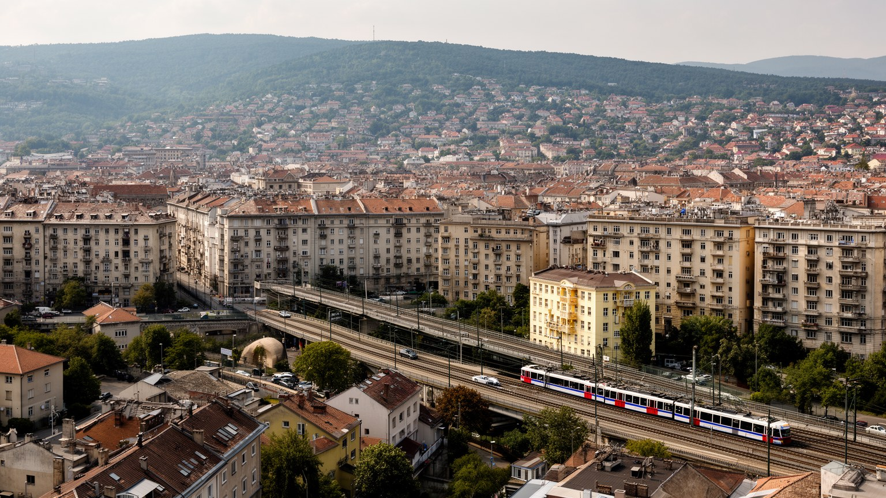
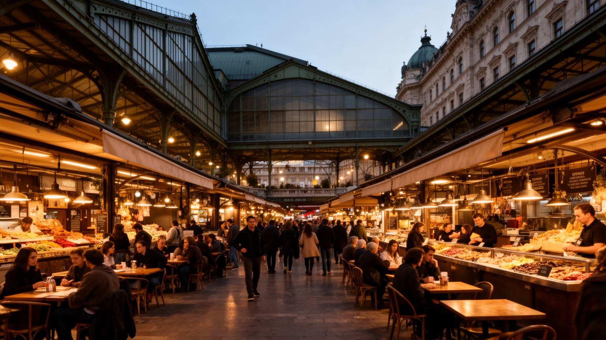
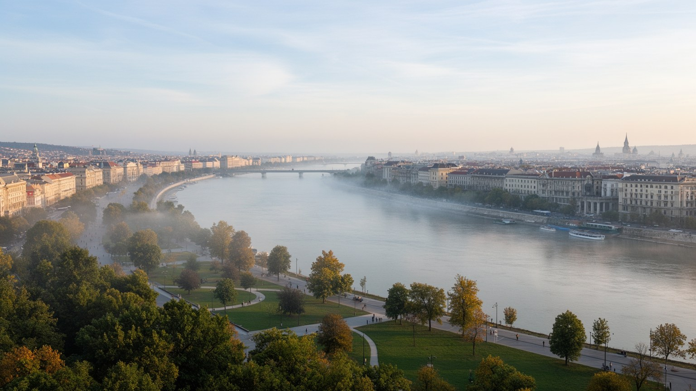
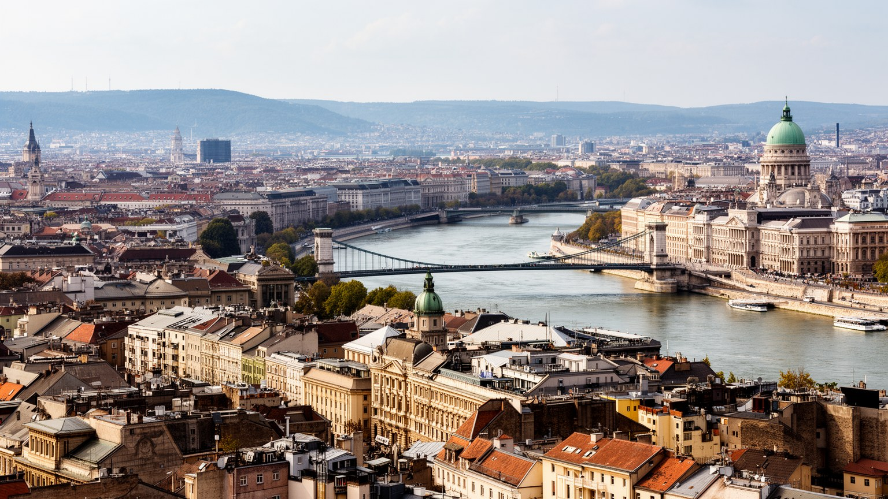

地政学
ブダペストはドナウの中流で中央ヨーロッパ、バルカン、東方への回路を束ねる首都です。帝国、冷戦、EU加盟後の政治が都市に残り、国境、移民、エネルギー、民主主義をめぐる議論も街路に出る。橋と広場が政治を映します。

🇭🇺 ハンガリー / 中央ヨーロッパ / World City Atlas
ドナウ川の両岸に王宮の丘、国会議事堂、温泉、ユダヤ人街、大学、金融、IT、夜の文化が重なるハンガリーの首都。帝国の記憶と現代政治、観光圧力、日常の通勤を同じ地図で読む都市です。
都市の骨格
ブダペストは川を挟んで性格の違う二つの都市が結びついた首都です。王宮の丘、国会議事堂、温泉、環状道路、地下鉄、夜の地区を重ねると、観光の絵葉書だけではない社会の輪郭が見えてきます。

ブダペストはドナウの中流で中央ヨーロッパ、バルカン、東方への回路を束ねる首都です。帝国、冷戦、EU加盟後の政治が都市に残り、国境、移民、エネルギー、民主主義をめぐる議論も街路に出る。橋と広場が政治を映します。
金融、IT、観光、医薬、大学研究、公共部門が雇用を支えます。ホテルや夜の文化の裏では清掃、調理、交通、介護、建設の労働が続き、賃金、家賃、若者の流出が都市の課題にもなります。技能の流出も重い課題です。
カトリック、改革派、ユダヤ人共同体、世俗文化が重なり、音楽、文学、温泉、カフェ、記念碑が都市の記憶を作ります。追悼と観光、信仰と日常の距離を読むことが重要な首都です。祈りの場も街に残ります、今も。
旅行者は王宮、温泉、鎖橋、中央市場、廃墟バーを巡りますが、住民は地下鉄、トラム、郊外住宅、学校、医療、川辺の公園を使って暮らします。観光の成功は生活との調整で測られます。夜の混雑も近所の課題です。

ブダペストの第一の読み方は、ドナウ川を境にした地形の差を見ることです。西岸のブダは丘が近く、王宮の丘、ゲッレールトの丘、温泉の湧く斜面、眺望の道が都市の高低を作ります。東岸のペストは平坦で、国会議事堂、官庁、銀行、劇場、環状道路、大通り、駅、商業地が広がり、近代首都の実務を引き受けてきました。鎖橋や自由橋、マルギット橋は単なる観光風景ではなく、二つの都市の性格を結ぶ社会的な装置です。川は美しい軸である一方、洪水、岸辺開発、交通量、観光船、公共空間の使い方をめぐる課題も抱えます。丘の上から見る国会議事堂は象徴的ですが、川沿いの路面電車、地下鉄の乗換、住宅地へ向かうバス、郊外から来る通勤者まで含めて初めて、首都の地理が立体的に見えます。ブダペストは景観都市である前に、川と橋が生活の時間を配分する都市です。冬の霧、夏の強い日差し、川面を渡る風は、散歩や観光だけでなく、通勤、屋外労働、住宅の快適さにも影響します。橋が工事や事故で詰まると、両岸の距離は急に遠くなり、川を挟む都市の脆さも見えてきます。地形は絵になる背景ではなく、行政、交通、観光、災害対応を同時に左右する条件です。さらに、駅前の広場や川岸の停留所は、旅行者と住民が同じ足場を使う場所です。そこに都市の公平さが現れます。日常にも今も。

ブダペストはハンガリーの政治中枢であり、国会議事堂、官庁、政党、裁判所、報道機関、大使館がペスト側の都心に集まります。ドナウ川沿いの国会議事堂は都市を代表する建築ですが、そこには国家の自画像、歴史解釈、現代政治の緊張が重なります。ハンガリー王国、オーストリア・ハンガリー帝国、二度の世界大戦、ナチス占領、共産党支配、1956年革命、体制転換、EU加盟という記憶は、広場、記念碑、博物館、街路名に刻まれています。観光客には壮麗な議事堂がまず見えますが、住民にとって都心はデモ、選挙、教育政策、報道の自由、司法、地方との関係が争われる場所でもあります。首都への権力集中は、雇用と文化機会を生む一方、地方都市との格差も広げます。ブダペストを政治都市として読むには、建築の美しさだけでなく、誰の歴史が記念され、誰の声が広場へ届きにくいのかを考える必要があります。広場に置かれる像や追悼の言葉は、過去を説明するだけでなく、現在の政府が何を強調したいかも示します。EUとの関係、報道機関の独立、大学や市民団体をめぐる議論は、国際ニュースであると同時に、住民が使う街路と制度の問題です。政治は議事堂の中だけでなく、大学の移転、劇場の運営、新聞売り場、学校の教科書にも現れます。首都の街角は国家の選択を見せる展示面でもあります。

ブダペストを他の欧州首都と分ける大きな要素は温泉です。ローマ時代の浴場跡、オスマン帝国期の浴場、十九世紀から二十世紀に整えられた大規模浴場が、地熱と都市文化を結びつけてきました。セーチェーニ、ゲッレールト、ルダシュのような浴場は旅行者に人気ですが、入浴は撮影の背景である前に、身体を休め、持病と付き合い、友人と話し、高齢者が日課を作る生活の場でもあります。温泉は医療、観光、建築、労働、衛生、ジェンダーの歴史を含みます。入場料の上昇や混雑が進むと、住民が使ってきた浴場が観光消費に傾きすぎる恐れもあります。水を大切にする文化は、夏の暑さ、公共プール、川辺の余暇ともつながります。ブダペストの温泉を読むことは、都市が人の身体をどのように回復させるかを見ることです。豪華なタイルやドームの下には、清掃、設備管理、医療的知識、受付、警備の仕事があり、湯気の向こうに都市の公共性が見えます。浴場では年齢、言語、所得、観光客と住民の差が同じ水の中で近づきますが、完全に消えるわけではありません。誰が気軽に通え、誰が一度の体験として消費するだけなのかを考えると、温泉は都市の公平性を映す鏡にもなります。入浴の作法、男女別や混浴の時間、医療的利用と娯楽利用の違いも、都市の文化を形づくる細部です。湯治の習慣も残ります。

ペストの旧ユダヤ人街は、ブダペストの記憶を読むうえで避けて通れない場所です。ドハーニ街シナゴーグを中心に、十九世紀以降の商業、出版、学術、音楽、医療、日常生活を支えたユダヤ人共同体の痕跡が残ります。同時に、第二次世界大戦中のゲットー、迫害、殺害、財産の喪失、戦後の沈黙を記憶する場所でもあります。追悼碑や博物館、墓地、中庭の古い建物は、観光の短い滞在では見落とされやすい生活の層を伝えます。近年、この地区は廃墟バー、ホステル、夜の飲食、短期滞在の中心にもなり、追悼の空間と娯楽の空間が近接しています。その近さは都市の活力である一方、騒音、家賃上昇、記憶の商品化という問題も生みます。ユダヤ人街を歩くときは、写真に映る壁の風合いだけでなく、失われた住民、残った共同体、現在の商業化、夜に働く人を同じ視野に入れる必要があります。ブダペストの多文化性は、祝祭だけでなく加害と喪失の記憶を引き受けることで初めて深くなります。シナゴーグの周辺で観光客が写真を撮り、数分先で若者が夜を過ごす光景は、都市が記憶を静かに隔離できないことを示します。追悼が形だけにならないためには、教育、案内、騒音対策、建物保存、住民の声を同時に扱う姿勢が必要です。ここでは、楽しさと沈黙の場所をどう隣り合わせに置くかが、都市の倫理を試します。
ブダペストの経済は、首都機能、金融、IT、医薬、大学研究、観光、公共サービスが重なって動きます。銀行、保険、法律、会計、外資系企業の地域拠点はペスト側のオフィス街に集まり、大学や研究機関は工学、医学、自然科学、人文知を支えます。医薬品やバイオ、車関連のサービス、ビジネスプロセスの外部委託も、ハンガリーの国際分業の中で重要です。しかし、都市の滑らかなサービスは、ホテル清掃、調理、配達、交通、介護、建設、警備、深夜の片付けに支えられています。高技能の若者は西欧へ移る選択肢を持ち、国内外から来る学生や労働者は家賃と言語の壁に向き合います。賃金水準が西欧主要都市より低いまま物価と住宅費が上がると、首都で働くことの利点は薄れます。ブダペストの産業を読むには、GDPや投資額だけでなく、誰が都市に残り、どの仕事が見えないまま都市を支えているかを見る必要があります。大学都市、観光都市、行政都市の顔は、労働条件と住宅政策なしには持続しません。外資のオフィスや研究拠点が増えるほど、英語を使う専門職とハンガリー語中心のサービス職の差も見えます。都市の競争力は、低い賃金を魅力にする段階から、技能を育てて生活を支える段階へ移れるかで決まります。研究者、看護師、運転手、ホテル従業員が同じ都市で暮らせることが、産業の厚みを保ちます。

ブダペスト観光は、王宮の丘、漁夫の砦、鎖橋、国会議事堂、中央市場、温泉、ドナウ川の夜景、廃墟バーを短い滞在で結べる強さを持ちます。物価の相対的な安さ、建築の迫力、夜の娯楽は旅行者を引きつけ、ホテル、飲食、ツアー、交通、文化施設に収入をもたらします。一方で、中心部では短期賃貸、騒音、混雑、土産物店化、住民向け商店の減少が問題になります。美しい川岸や市場が観光の舞台になるほど、住民が買物をし、通勤し、子どもを連れて歩く日常との距離が広がることがあります。観光客にとって便利な深夜営業や安い酒は、近所に住む人には睡眠と安全の問題にもなります。文化遺産を守るには、建物の保存だけでなく、働く人の賃金、清掃、トイレ、公共交通、混雑の分散、地元商店の維持が必要です。ブダペストを訪れる楽しさは否定されるべきではありませんが、その成功は住民の生活が押し出されない範囲で初めて都市の力になります。観光の質は、写真の美しさだけでなく、都市が普通の暮らしを保てるかで測られます。船着場、橋、温泉、夜の地区に人が集中すると、警備や清掃の負担も増えます。訪問者を受け入れながら、住民が市場や川辺を使い続けられる設計が必要です。案内の多言語化や混雑の分散は、観光客への親切であると同時に住民の生活を守る手段です。小さな店の維持も重要です。

ブダペストの暮らしは、都心の歴史的アパート、社会主義期の集合住宅、郊外の戸建て、新しいマンション、学生向け賃貸が混在する住宅地で形づくられます。地下鉄、トラム、バス、近郊鉄道は比較的使いやすく、橋を渡る移動や環状道路の混雑を補いますが、住む場所によって通勤時間、学校、医療、買物、公園への距離は大きく変わります。中心部は便利で文化施設も近い一方、観光化と短期賃貸で家賃が上がり、若い世代や低所得の住民が外側へ押し出されやすくなります。郊外では広さを得やすい反面、車依存、通勤時間、公共サービスの薄さが負担になります。古い建物は味わいがありますが、断熱、エレベーター、暖房費、耐震性、修繕費の問題を抱えます。住宅は個人の好みではなく、都市の公平性を決める基盤です。ブダペストの魅力を保つには、中心部を観光と投資だけに渡さず、学生、教員、看護師、運転手、店員、高齢者が住み続けられる条件を整える必要があります。通勤の長さと家賃の重さは、都市の文化や労働の持続性に直結します。家の近くに保育、診療、食料品店、緑地があるかどうかは、所得以上に生活の余裕を左右します。住宅政策と交通政策を切り離すと、都心の華やかさの外側で日常の負担が積み上がります。古い中庭住宅の修繕を誰が負担するかも、景観保存と生活の両方に関わる問題です。

ブダペストの食文化は、中央市場のパプリカ、肉料理、菓子、ワイン、カフェ、食堂、移民料理、学生向けの安い店まで幅広い。グヤーシュや鶏肉のパプリカ煮は観光向けの名物として知られますが、都市の日常食は職場の昼食、大学近くの軽食、家族の台所、週末の市場、郊外の買物にもあります。カフェは十九世紀から文学、新聞、政治、会話の場として重要で、今日も旧市街の優雅な店と近所の実用的な店が並びます。夜の文化では、旧ユダヤ人街の廃墟バーが国際的な知名度を得ました。古い中庭や壊れかけた建物を使う空間は創造性を示す一方、地区の家賃上昇、騒音、短期滞在の集中を進めることもあります。食と夜の文化を読むことは、都市の楽しさだけでなく、働く人の時間、近隣住民の睡眠、酒に頼る観光、文化の商業化を見ることです。ブダペストの魅力は、歴史的な喫茶店と若い夜の場が同じ街区にあることですが、その共存には規制、住民との対話、店の責任が欠かせません。味と音楽の背後には、都市の生活時間をどう分け合うかという課題があります。市場の仕入れ、厨房の下働き、深夜の清掃、酔客への対応は、楽しい夜を支える見えにくい仕事です。食の豊かさは、作る人と近所に住む人の条件まで含めて評価されるべきです。昼の市場と夜のバーを続けて歩くと、同じ街区が時間帯で別の都市へ変わることが分かります。

ブダペストの気候は温暖湿潤で、冬は冷え込み、夏は暑くなります。内陸の盆地的な環境では熱がこもりやすく、石造りの都心、アスファルト、観光の行列、屋外労働、高齢者の住まいに猛暑の負担が現れます。ドナウ川は都市の象徴であり交通と余暇の軸ですが、洪水リスク、岸辺の防護、橋の通行、地下空間への影響を常に考えなければならない存在でもあります。気候変動で強い雨や暑さが増えるほど、堤防、雨水管理、街路樹、公園、日陰、水飲み場、涼める公共施設は重要になります。歴史的景観を守る地区では、断熱改修や冷房設備の導入が難しい場合もあり、景観保護と生活の安全を両立させる工夫が必要です。川辺を観光のために美しく整えるだけでなく、住民が歩き、休み、避難できる場所として扱うことが都市の成熟につながります。ブダペストの気候対策は、環境政策であると同時に福祉政策です。暑い日に誰が涼しい場所へ行けるか、洪水時に誰へ情報が届くかが、都市の公平性を決めます。丘陵地、川沿い、密な旧市街、郊外団地ではリスクの形が違います。気候に強い都市を作るには、大きな堤防だけでなく、日陰の停留所、断熱された住宅、近所の涼しい図書館も必要です。川の美しさを保つことと、増水時の避難を考えることは同じ都市計画の中にあります。高齢者への連絡も欠かせません。

ブダペストは、ドナウ川の夜景や王宮の丘だけで記憶されやすい都市ですが、その美しさの奥には政治、労働、宗教、観光、住宅、気候の複雑な層があります。丘のブダは歴史と眺望を強く語り、平野のペストは国会、金融、大学、劇場、夜の地区、日常の商店を抱えます。温泉は身体を休める公共文化であり、ユダヤ人街は追悼と商業化の緊張を抱え、観光の成功は住民の家賃や睡眠に影響します。首都への投資と人材集中はハンガリー経済を支える一方、地方との格差や若者の移動を生みます。EUの一員として開かれた都市でありながら、民主主義、報道、移民、歴史解釈をめぐる国内政治の争点も背負います。ブダペストを読むには、絵葉書のような川景色を入口にしつつ、その橋を渡る通勤者、浴場を清掃する人、夜の店の近所に住む人、記念碑の前で足を止める人まで視野を広げる必要があります。都市の価値は建築の豪華さだけではなく、異なる記憶と生活が同じ場所でどこまで共存できるかに表れます。ブダペストは、魅力的な観光都市であると同時に、中央ヨーロッパの現在を映す政治的で生活的な首都です。橋、浴場、市場、広場を別々の名所として消費するのではなく、それぞれが住民の時間と制度にどう結びつくかを見ると、この都市はより深く読めます。美しい都市ほど、その美しさを誰が維持し、誰が負担を受けるのかを問う必要があります。